Manual de Usuario — BandSocial
📋 Tabla de Contenidos
1. Primeros Pasos
1.1 Crear una Cuenta
- Ve a la aplicación y haz clic en "Registrarse"
- Completa el formulario:
- Nombre completo
- Correo electrónico
- Contraseña (mínimo 6 caracteres)
- Tipo de perfil: Músico o Banda
- Acepta los términos y condiciones
- Haz clic en "Crear cuenta"
- Verifica tu correo electrónico con el enlace que recibirás
Pantalla de registro con el formulario completo
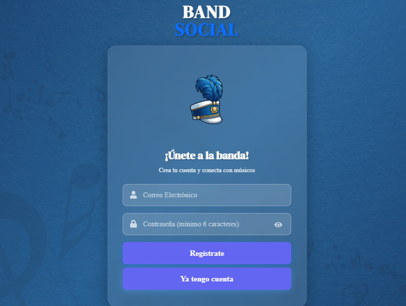
1.2 Iniciar Sesión
- Haz clic en "Iniciar sesión"
- Ingresa tu correo y contraseña
- Haz clic en "Entrar"
Pantalla de login de BandSocial

¿Olvidaste tu contraseña?
Haz clic en "¿Olvidaste tu contraseña?" → ingresa tu correo → recibirás un enlace para restablecerla.
1.3 Modo Invitado
Si quieres explorar la plataforma sin registrarte, puedes entrar como invitado desde la pantalla de inicio. Tendrás acceso limitado de solo lectura.
Botón "Entrar como invitado" en la pantalla principal
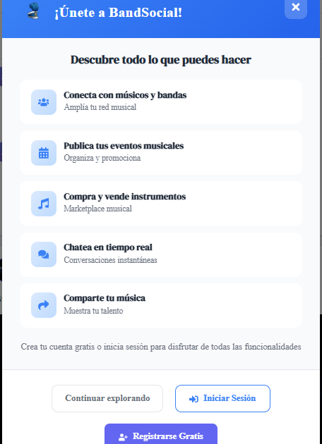
2. Tu Perfil
2.1 Editar tu Perfil
- Haz clic en tu foto de perfil o en el menú → "Mi Perfil"
- Haz clic en "Editar perfil"
- Puedes actualizar:
- Foto de perfil y foto de portada
- Nombre artístico / nombre de la banda
- Descripción biográfica
- Ciudad y departamento
- Géneros musicales
- Instrumentos que tocas
- Redes sociales
Modal de edición de perfil con todos los campos
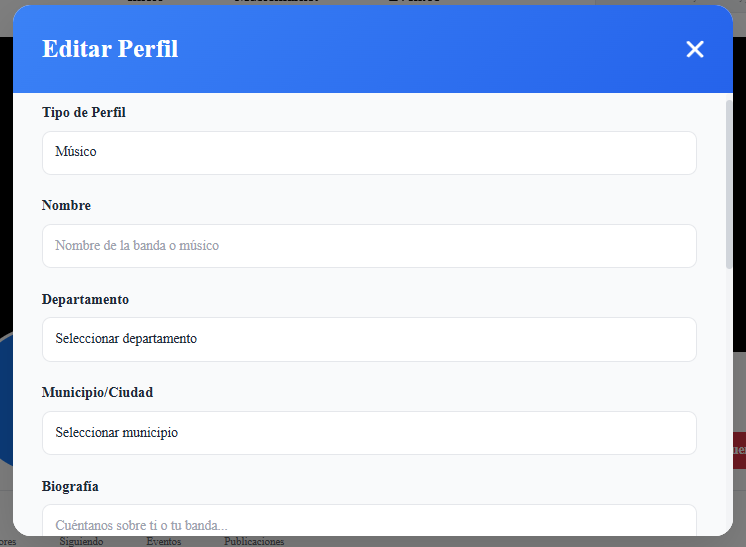
2.2 Ver el Perfil de Otros Usuarios
Desde el feed o buscador, haz clic en el nombre o foto de cualquier usuario para ver su perfil completo: publicaciones, eventos, instrumentos disponibles y más.
Vista del perfil de otro usuario con su información y publicaciones
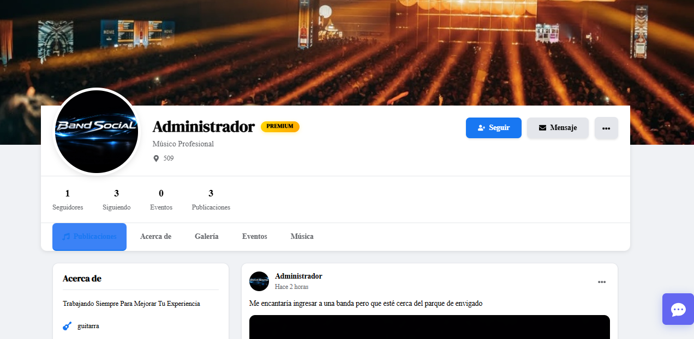
2.3 Seguir / Dejar de Seguir
En el perfil de cualquier usuario encontrarás el botón "Seguir". Al seguirlo, sus publicaciones aparecerán en tu feed. Puedes ver tus seguidores y seguidos en la sección "Conexiones".
3. Feed de Publicaciones
3.1 Ver el Feed
La pantalla principal (/) muestra las publicaciones de músicos y bandas. Puedes filtrar por:
- Tipo de publicación (demo, concierto, búsqueda, etc.)
- Ciudad
Feed principal con publicaciones y filtros visibles
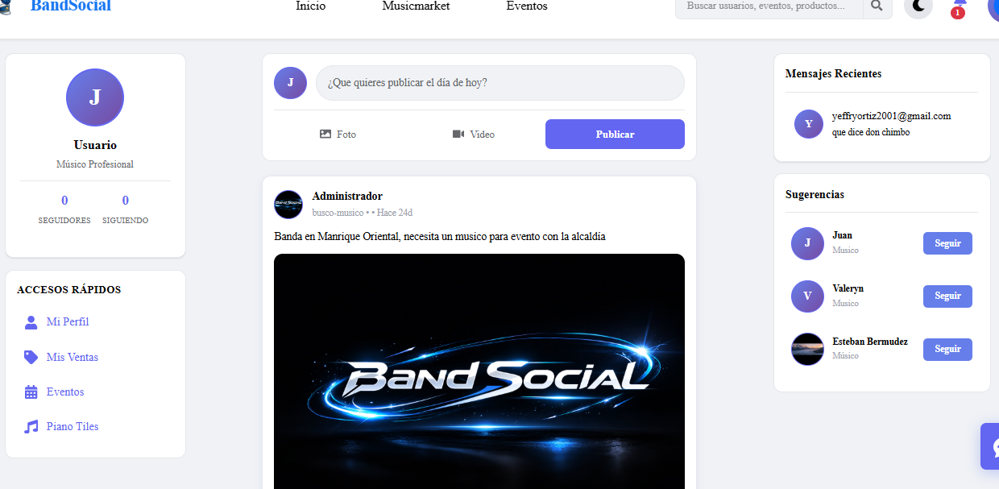
3.2 Crear una Publicación
- Haz clic en el botón "Nueva publicación" o "+"
- Escribe tu contenido
- Opcionalmente agrega una imagen
- Selecciona el tipo de publicación
- Haz clic en "Publicar"
Formulario de nueva publicación abierto
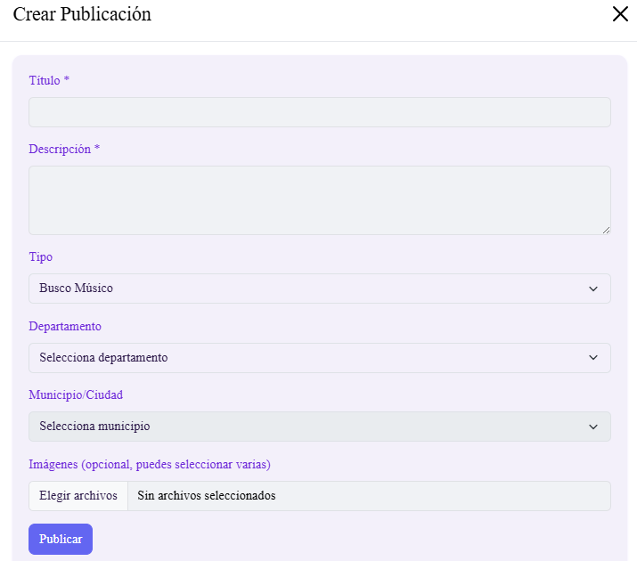
3.3 Reaccionar y Comentar
- Reacciones: Haz clic en el ícono de reacción debajo de una publicación para dar like, 🔥, 🎸 u otras.
- Comentarios: Haz clic en el ícono de comentario, escribe tu mensaje y presiona Enter o el botón de enviar.
- Likes en comentarios: Puedes dar like a comentarios individuales.
4. Eventos Musicales
4.1 Explorar Eventos
Ve a la sección "Eventos" en el menú. Puedes filtrar por:
- Ciudad / municipio
- Tipo de evento (concierto, jam session, audición, etc.)
- Fecha
Sección de eventos con tarjetas y filtros
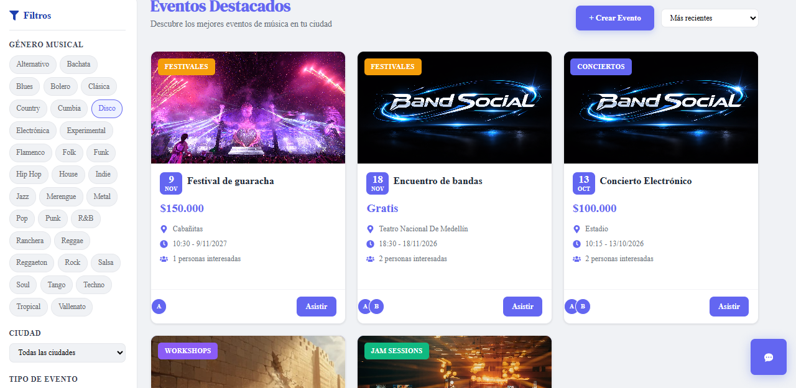
4.2 Crear un Evento
- Haz clic en "Crear evento"
- Completa los campos:
- Nombre del evento
- Descripción
- Fecha y hora
- Ubicación (departamento y ciudad)
- Tipo de evento
- Imagen del evento (opcional)
- Haz clic en "Publicar evento"
Formulario de creación de evento con campos completos
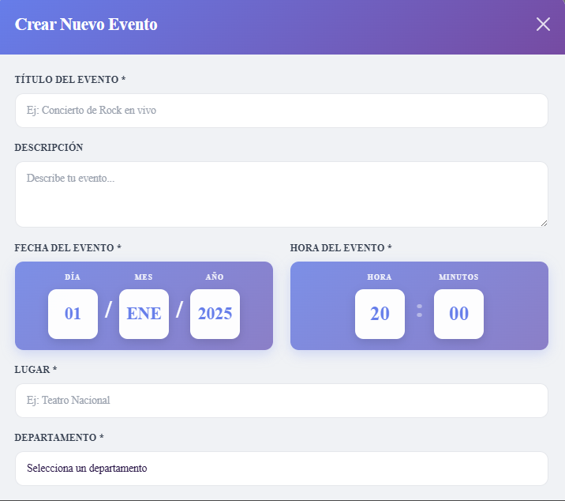
4.3 Asistir a un Evento
En la tarjeta de cualquier evento, haz clic en "Asistiré" para confirmar tu asistencia. El organizador podrá ver quiénes asistirán.
5. MusicMarket
5.1 Explorar el Mercado
En "MusicMarket" encontrarás instrumentos, equipos y accesorios musicales en venta. Filtra por:
- Categoría (guitarra, bajo, teclado, etc.)
- Precio
- Estado (nuevo / usado)
- Ciudad
Vista del MusicMarket con tarjetas de productos y filtros
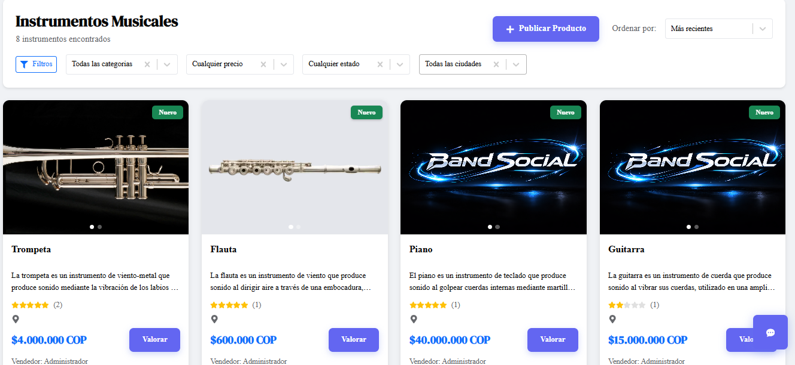
5.2 Publicar un Instrumento o Equipo
- Haz clic en "Publicar artículo"
- Agrega:
- Título del artículo
- Descripción detallada
- Precio en COP
- Categoría y estado
- Imágenes del producto
- Confirma con "Publicar"
Formulario de publicación de artículo en MusicMarket
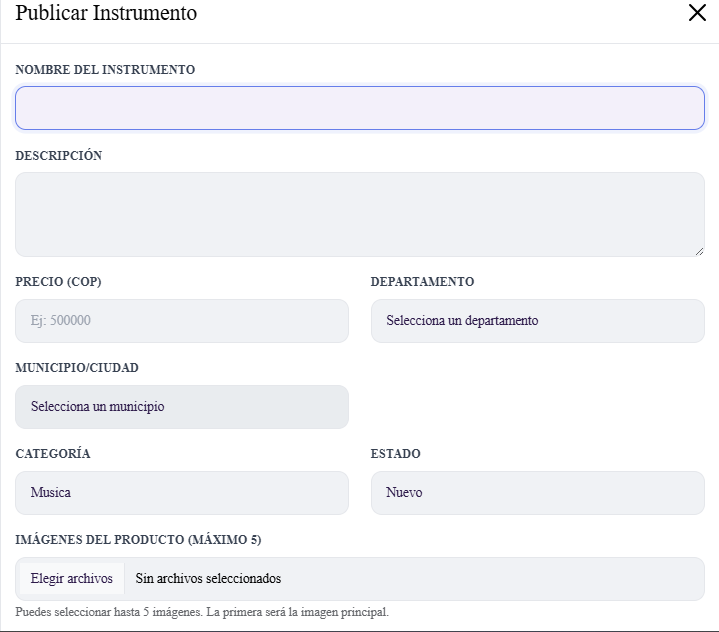
5.3 Contactar a un Vendedor
En el detalle de un artículo verás el botón "Contactar" o un enlace directo al chat del vendedor. También puedes ver las reseñas de otros compradores sobre el vendedor.
6. Chat y Mensajería
6.1 Iniciar una Conversación
- Desde el perfil de un usuario, haz clic en "Enviar mensaje"
- O desde el ícono de chat 💬 en la barra de navegación
- Escribe tu mensaje y presiona Enter
Ventana de chat abierta con una conversación
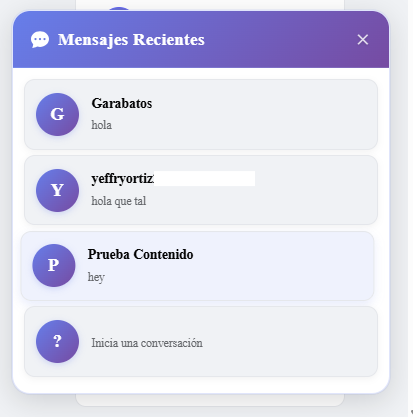
6.2 Chat en Móvil
En dispositivos móviles, el chat se accede desde el ícono de mensajes en la barra de navegación inferior. El chat flotante se oculta automáticamente en pantallas pequeñas para mejorar el espacio.
7. Notificaciones
7.1 Ver Notificaciones
Haz clic en el ícono de campana 🔔 en la barra superior para ver tus notificaciones. Están organizadas en pestañas:
- Todas — todo tipo de actividad
- Menciones — cuando te mencionan
- Seguidores — nuevos seguidores
Centro de notificaciones abierto con pestañas
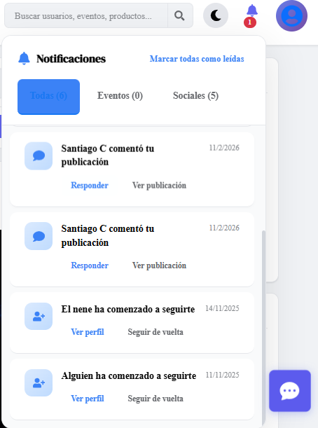
7.2 Tipos de Notificaciones
| Tipo | Descripción |
|---|---|
| 👍 Reacción | Alguien reaccionó a tu publicación |
| 💬 Comentario | Alguien comentó tu publicación |
| 👤 Seguidor | Alguien comenzó a seguirte |
| 📅 Evento | Actualización de un evento al que vas a asistir |
| 💬 Mensaje | Nuevo mensaje en el chat |
8. Membresía Premium
8.1 ¿Qué incluye el plan Premium?
| Característica | Gratuito | Premium |
|---|---|---|
| Publicaciones | Limitadas | Ilimitadas |
| Visibilidad en búsquedas | Normal | Prioridad |
| Estadísticas avanzadas | ❌ | ✅ |
| Insignia verificado | ❌ | ✅ |
8.2 Cómo Suscribirse
- Ve a "Membresía" en el menú
- Selecciona el plan Premium
- Haz clic en "Suscribirme"
- Completa el proceso de pago
Página de membresía con los planes comparados
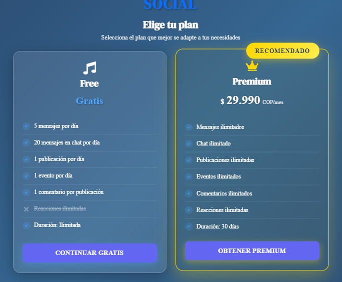
9. Preguntas Frecuentes
📁 Carpeta de Imágenes
Todas las capturas de este manual deben guardarse en:
documentacion/manuales/manual-usuario/imagenes/
Lista de imágenes necesarias:
| Archivo | Sección | Descripción |
|---|---|---|
registro-formulario.png | 1.1 | Pantalla de registro |
login-pantalla.png | 1.2 | Pantalla de login |
modo-invitado.png | 1.3 | Botón modo invitado |
editar-perfil-modal.png | 2.1 | Modal edición de perfil |
perfil-otro-usuario.png | 2.2 | Vista perfil ajeno |
feed-principal.png | 3.1 | Feed con publicaciones |
nueva-publicacion.png | 3.2 | Formulario nueva publicación |
eventos-lista.png | 4.1 | Lista de eventos |
crear-evento-formulario.png | 4.2 | Formulario crear evento |
musicmarket-lista.png | 5.1 | Vista MusicMarket |
musicmarket-publicar.png | 5.2 | Formulario publicar artículo |
chat-ventana.png | 6.1 | Ventana de chat |
notificaciones-centro.png | 7.1 | Panel de notificaciones |
membresia-planes.png | 8.2 | Comparación de planes |